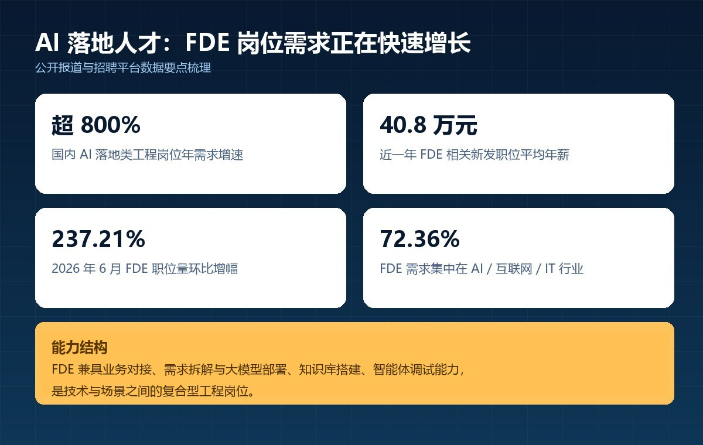

招聘平台数据给出了一个清晰信号：2026 年以来，FDE（Frontier Deployment Engineer，前沿部署工程师）相关新发职位量逐月攀升，6 月环比增长 237.21%，8 月单月发布量约相当于上半年总和；近一年相关职位平均年薪约 40.8 万元。与此同时，公开报道显示国内 AI 落地类工程岗位年需求增速超过 800%。当大模型技术竞争趋缓，产业竞争的焦点正落到"最后一公里"的部署与交付上。
这一变化不只是招聘市场的热度，更反映出人工智能从技术研发走向规模化落地的结构性转折——谁来把模型真正装进企业的业务流程，成为决定 AI 能否产生实际收益的关键。

一、事实层面：岗位、薪资与能力结构
先看岗位。招聘网站数据表明，FDE 相关新发职位在 2026 年快速放量，6 月环比大幅增长，7 月、8 月在此基础上继续上升。行业分布也不再局限于技术行业：AI、互联网、IT 占比约 72.36%，但医疗健康、交通物流、金融、汽车等领域的需求正在增加。这意味着 FDE 不是某个行业的专属岗位，而是各类企业智能化改造的共性需求。
再看薪资。近一年猎聘平台上 FDE 相关新发职位平均年薪约 40.8 万元，薪资中位数约 36.6 万元，均高于全行业平均水平。市场用价格给出了对这类复合能力的估值。
最后看能力结构。公开分析将 FDE 描述为"技术＋业务＋工程＋合规"的四维复合岗位：约六成工作集中在业务对接、需求拆解、方案设计与场景诊断，约四成聚焦大模型部署、知识库搭建、智能体调试与系统运维。它既不是纯算法岗，也不是传统实施岗，而是能在业务语言与技术语言之间做翻译的人。
二、现实做法：高校与企业如何补上这个缺口
企业侧的动作很直接。2026 长三角 FDE 联合行动等活动中，FDE 专家与目标企业的对接完成度在会后一周内超过 80%。有从业者指出，FDE 的核心价值在于帮助客户核算投入产出比、持续优化方案，并推动企业从数字化走向智能化——不是交付一套系统，而是交付可见的经营结果。
高校侧则在调整培养方式。公开报道显示，多所院校把行业一线的真实场景搬进课堂，推行项目制、工单制、驻场制实训，让学生参与需求对接、模型调试、场景适配到上线运维的全流程。有企业专家判断，底层算法岗位门槛高、需求有限，标注与提示词等基础岗位红利消退，而 FDE 场景工程交付、具身智能数据应用、工业视觉等工程落地岗位缺口持续扩大，是应用型本科人才的核心就业赛道。
研究院人工智能板块的实践与之呼应：以 FDE 前沿部署工程师培养为核心，采取"理论学习＋企业真实项目"的双轨模式，联合行业组织、标杆企业与高校共建培养标准，并按专项计划三年服务 1000 家湾区企业开展智转数改。服务模式上强调"专家团队＋FDE 人才"组合，从需求梳理、知识库建设到智能体部署全程陪跑，并以企业人员培训收尾，确保交付后企业能够自主使用与迭代。
三、趋势判断：未来三到五年会发生什么
其一，AI 竞争的重心从模型转向场景。当底层模型能力趋于接近，决定商业价值的是能否把模型嵌入具体业务流程、能否稳定运维并持续优化。这意味着企业采购 AI 服务时，会从"买工具"转向"买结果"，驻场交付与持续运营成为常态。
其二，FDE 培养走向标准化与分级。目前中国信通院等机构正从理论共识、标准体系、评估认证和产业生态等方面推进 FDE 相关工作，高校也在发起专门的培育计划。可以预期，岗位能力标准、课程标准与认证体系会逐步清晰，培训市场将从概念炒作转向有标准、有实操、有成果评价的规范供给。
其三，产教融合从"送学生进企业"深化为"把项目引进课堂"。真实项目成为培养 FDE 的必要条件，院校的课程将更紧密地跟随产业迭代，企业的一线场景会适度开放给教学。对大湾区而言，制造业与现代服务业中蕴藏的大量落地场景——从供应链调度、财务审核到招投标信息监控——为这种融合提供了土壤。
其四，"专家＋人才"的组合服务会成为主流交付形态。复杂场景需要资深专家做方案设计，也需要驻场人才做日常调优；单纯依靠专家成本高、难以规模化，单纯依靠初级人才又难以保证质量。两者结合，既能控制成本，也能保证交付效果。
结语
AI 落地的瓶颈，正在从"有没有模型"变成"有没有能把模型用好的人"。FDE 岗位需求的快速增长，是这一转折最直接的市场信号。对院校而言，这意味着专业建设要锚定真实岗位；对企业而言，这意味着智能化改造要同时算清技术账和人才账。谁先把"最后一公里"打通，谁就能把技术投入变成账本上的真实收益。